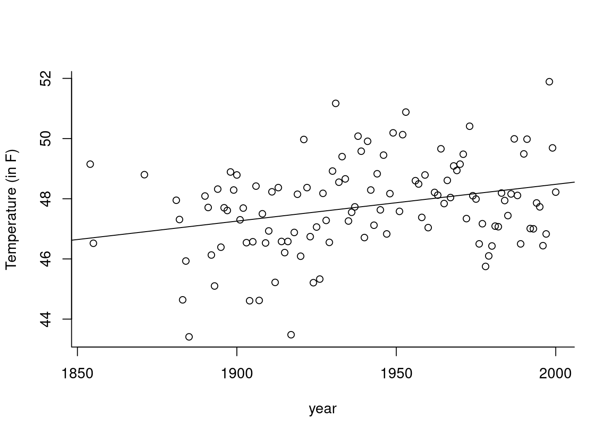

2.6 (Centered) coefficient of determination
Recall the decomposition of observations into fitted and residual vectors, \[\boldsymbol{y} = (\boldsymbol{y} - {\mathbf{X}}{\hat{\boldsymbol{\beta}}}) + {\mathbf{X}}{\hat{\boldsymbol{\beta}}}= {\boldsymbol{e}} + \hat{{\boldsymbol{y}}}\] where \({\boldsymbol{e}} \equiv {\mathbf{M}}_{{\mathbf{X}}}{\boldsymbol{y}} \perp \hat{{\boldsymbol{y}}} \equiv {\mathbf{H}}_{{\mathbf{X}}}{\boldsymbol{y}}\).
The centered coefficient of determination, \(R^2_c\) measures the proportion of variation explained by the centered fitted values relative to the centered observations, i.e., \[ R^2_c = \frac{\|\hat{{\boldsymbol{y}}}-\bar{y}\mathbf{1}_n\|^2}{\|{\boldsymbol{y}}-\bar{y}\mathbf{1}_n\|^2}=\frac{\|\hat{{\boldsymbol{y}}}\|^2-\|\bar{y}\mathbf{1}_n\|^2}{\|{\boldsymbol{y}}\|^2-\|\bar{y}\mathbf{1}_n\|^2}.\] since the vectors \(\bar{y}\mathbf{1}_n \perp \hat{{\boldsymbol{y}}}-\bar{y}\mathbf{1}_n\).
Provided that \(\mathbf{1}_n \in {\mathsf{span}}({\mathbf{X}})\), it is obvious that the fitted values \(\hat{{\boldsymbol{y}}}\) are invariant to linear transformations of the covariates \(\mathbf{X}\) (by which I mean you can transform the design matrix column by column, with \(\mathbf{x}_i \mapsto \alpha_i+\mathbf{x}_i\gamma_i\) for \(i=1, \ldots, p\)). Multiplicative changes in \({\boldsymbol{y}}\) lead to an equivalent change in \({\boldsymbol{e}}\) and \(\hat{{\boldsymbol{y}}}\). However, location-changes in \({\boldsymbol{y}}\) are only reflected in \(\hat{{\boldsymbol{y}}}\) (they are absorbed by the intercept). This is why \(R^2\) is not invariant to location-changes in the response, since the ratio \(\|\hat{{\boldsymbol{y}}}\|^2/\|{\boldsymbol{y}}\|^2\) increases to 1 if \({{\boldsymbol{y}}}\mapsto {{\boldsymbol{y}}}+ a \mathbf{1}_n\).
This invariance is precisely the reason we dismissed \(R^2\). For example, a change of units from Farenheit to Celcius, viz. \(T_c = 5 (T_F - 32)/9\), leads to different values of \(R^2\):
data(aatemp, package = "faraway")
plot(temp ~ year, data = aatemp, ylab = "Temperature (in F)", bty = "l")
#Form design matrix and two response vectors
yF <- aatemp$temp
n <- length(yF)
yC <- 5/9*(aatemp$temp - 32)
X <- cbind(1, aatemp$year)
# Obtain OLS coefficients and fitted values
XtX <- solve(crossprod(X))
beta_hat_F <- XtX %*% crossprod(X, yF)
abline(a = beta_hat_F[1], b = beta_hat_F[2])
beta_hat_C <- XtX %*% crossprod(X, yC)
fitted_F <- X %*% beta_hat_F
fitted_C <- X %*% beta_hat_C
# Compute coefficient of determination
R2_F <- sum(fitted_F^2)/sum(yF^2)
R2_C <- sum(fitted_C^2)/sum(yC^2)
#Centered R^2
R2c_F <- sum((fitted_F-mean(yF))^2)/sum((yF-mean(yF))^2)
R2c_C <- sum((fitted_C-mean(yC))^2)/sum((yC-mean(yC))^2)
isTRUE(all.equal(R2c_F, R2c_C))## [1] TRUEThe difference \(R^2(F)-R^2(C)=\) 0.00752 is small because the \(R^2\) value is very high, but the coefficient itself is also meaningless. In this example, \(R^2(F)=\) 0.9991, which seems to indicate excellent fit but in fact only 8.54% of the variability is explained by year and we do an equally good job by simply taking \(\hat{y}_i=\bar{y}\).
\(R^2_c\) makes the comparison between the adjusted linear model and the null model with only a constant, which predicts each \(y_i (i=1, \ldots, n)\) by the average \(\bar{y}\).
If \(R^2_c\) gives a very rough overview of how much explanatory power \({\mathbf{X}}\) has, it is not a panacea. If we add new covariates in \({\mathbf{X}}\), the value of \(R^2_c\) necessarily increases. In the most extreme scenario, we could add a set of \(n-p\) linearly independent vectors to \({\mathbf{X}}\) and form a new design matrix \(mX^*\) with those. The fitted values from running a regression with \({\mathbf{X}}^*\) will be exactly equal to the observations \({\boldsymbol{y}}\) and thus \(R^2_c=1\). However, I hope it is clear that this model will not be useful. Overfitting leads to poor predictive performance; if we get a new set of \(\mathbf{x}_*\), we would predict the unobserved \(y_*\) using its conditional average \(\mathbf{x}_i^*{\hat{\boldsymbol{\beta}}}\) and this estimate will be rubish if we included too many meaningless covariates.
Other versions of \(R^2_c\) exist that include a penalty term for the number of covariates; these are not widely used and can be negative in extreme cases. We will cover better goodness-of-fit diagnostics later in the course.